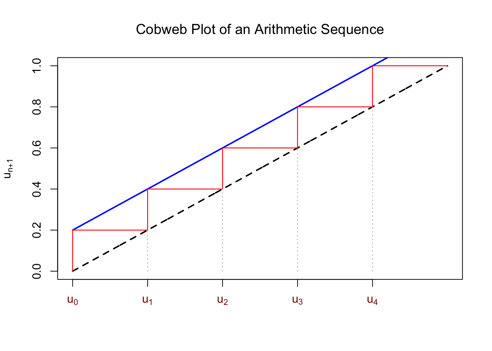
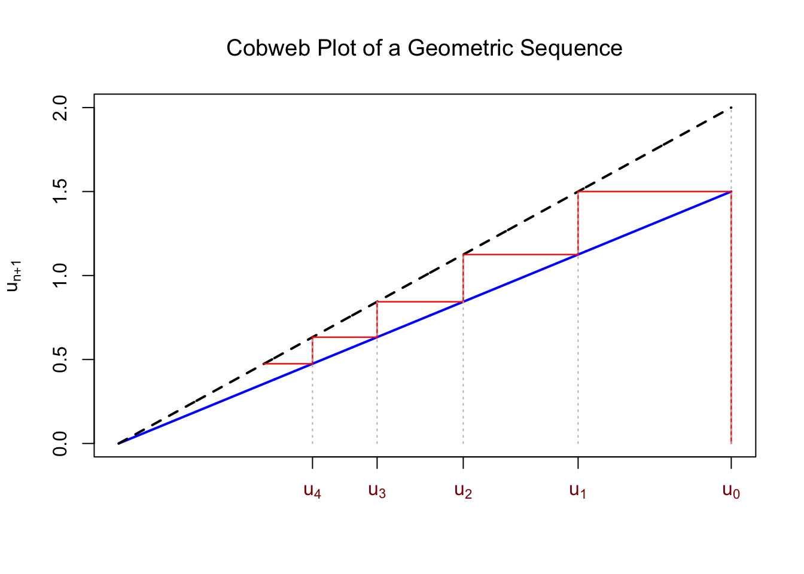
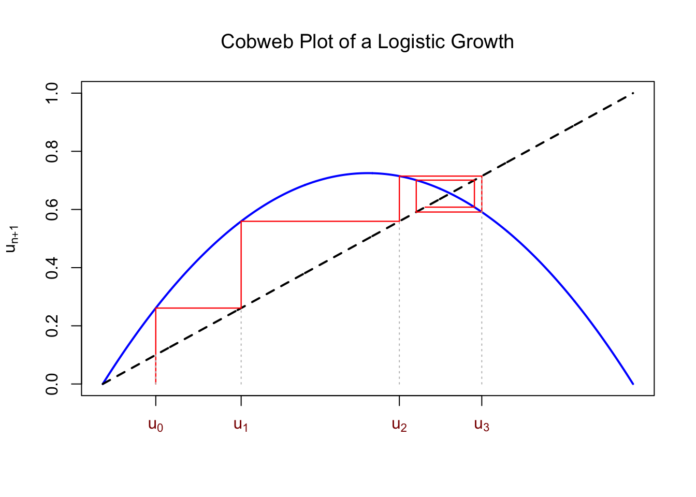

13 Difference equations
Zana-bola
A traditional bank savings account provides an intuitive real-world introduction to discrete-time dynamical systems. When you deposit an initial amount of money and leave it untouched for a fixed period \(t\) (such as three months), an additional amount proportional to the current balance is added. In Madagascar, this earned yield is known as zanany.
For instance, for a deposit of 1,000,000 Ariary at a quarterly interest rate \(r = 2\%\) (\(0.02\)), the balance at the end of the first period is:
\[ \begin{align*} \text{Balance}_1 & = 1{,}000{,}000 + (0.02 \times 1{,}000{,}000) \\ & = 1{,}000{,}000 \times (1 + 0.02) \\ & = 1{,}000{,}000 \times 1.02 \end{align*} \]
At the end of the second three-month period, the interest applies to the new total rather than just the initial deposit:
\[ \begin{align*} \text{Balance}_2 & = 1{,}020{,}000 + (0.02 \times 1{,}020{,}000) \\ & = 1{,}020{,}000 \times 1.02 \\ & = \text{Balance}_1 \times 1.02 \end{align*} \]
Generalizing this process, the next balance \(B_{n+1}\) depends directly on the current balance \(B_n\) and the interest rate \(r\):
\[B_{n+1} = B_n + r \cdot B_n = B_n (1 + r)\]
This relationship is a classic example of a difference equation (or recurrence relation). In such systems, time advances in discrete steps \(n \to n+1\), and the future state of the system is entirely determined by its present state.
The concept of a next state depending sequentially on the current state is not limited to financial mathematics; it is deeply embedded in cultural proverbs (ohabolana) that reflect recursive processes and dependence on previous state:
- Ny hazo no vanon-ko lakana, ny tany naniriana no tsara.
- Raha maty aho, matesa rahavako; raha maty rahavako, matesa ny omby
Formal
A first-order difference equation is a functional equation of the form:
\[y_{t+1} = f(t, y_t)\]
where:
- The index \(t\) belongs to a discrete domain (typically the set of non-negative integers \(\mathbb{Z}_{\ge 0} = \{0, 1, 2, \dots\}\)).
- \(f: \mathbb{R} \to \mathbb{R}\) is a well-defined real-valued function.
- The state \(y_{t+1}\) depends non-trivially on the current state \(y_t\).
In discrete-time dynamical systems, a first-order difference equation specifies how a system evolves from state \(y_t\) to state \(y_{t+1}\) over a single step. Given an initial condition \(y_0\), the full trajectory \(\{y_0, y_1, y_2, \dots\}\) is uniquely determined by repeated application of \(f\).
While a first-order difference equation depends only on the immediate past state (\(y_t \to y_{t+1}\)), a difference equation of order \(k\) is a recurrence relation where the next state depends on the memory of the past \(k\) discrete steps:
\[y_{t+k} = f(t, y_t, y_{t+1}, \dots, y_{t+k-1})\]
where \(k \ge 1\) represents the order of the equation, defining the length of the system’s memory.
To build intuition for the order of a difference equation, consider how much historical information you need to calculate the next step:
Order 1 (Immediate Memory): The bank account balance for next month (\(y_{t+1}\)) depends solely on your current balance (\(y_t\)). You do not need to know what your balance was six months ago.
Order 2 (Two-Step Memory): The famous Fibonacci sequence (\(F_{t+2} = F_{t+1} + F_t\)) is of order 2. To determine tomorrow’s value, you must know both today’s value and yesterday’s value. In education, the success of the child might depend on both the parents and the grandparents.
Examples
To illustrate how discrete-time dynamical systems behave, we examine three forms—ranging from linear additions to population dynamics.
An arithmetic sequence describes a system that grows or decays by a constant fixed amount at each step:
\[u_{n+1} = u_n + r\]
where \(r \in \mathbb{R}\) is the constant difference. Consider a traditional piggy bank (boatin-drakitra). If you deposit a fixed sum of money \(r\) at regular intervals, \(u_n\) represents your total savings at step \(n\).
In discrete modeling, specifying the time unit of the index step \(+1\) is crucial. Depending on your saving schedule, an increment of \(n \to n+1\) could represent a single day, one week, or one month. Without defining this period, the rate of change remains ambiguous.
A geometric sequence models multiplicative growth or decay over discrete intervals:
\[u_{n+1} = q \cdot u_n\]
where \(q > 0\) is the constant growth factor.
Unlike the arithmetic model—where a fixed quantity is added—the update in a geometric system is proportional to the current state \(u_n\). As seen with bank interest (zanany), when \(q = 1 + r\), the balance scales geometrically at each step.
Notice that if we apply a logarithmic transformation (Chapter 12), the geometric sequence simplifies into an equivalent arithmetic sequence:
\[v_{n+1} = v_n + s = \]
where:
- \(v_{n+1} = \log(u_{n+1})\)
- \(v_n = \log(u_n)\)
- \(s = \log(q)\)
This transformation demonstrates another fundamental property of logarithms: converting multiplicative growth models into linear additive ones.
Combining constant proportional growth with a fixed additive input yields a first-order linear difference equation:
\[u_{n+1} = q \cdot u_n + r\]
This models a hybrid savings strategy where the total saving is the sum of money in a bank account with interest at rate \(q = 1 + \text{interest}\), and the sum in from the boatin-drakitra with fixed manual deposit \(r\).
In ecology, the total population size at time step \(t+1\) depends on four fundamental demographic processes occurring during interval \(t\) (generally one year):
\[\text{Pop}_{t+1} = \text{Pop}_t + B + I - D - E\]
where:
- \(B\) = Number of births
- \(I\) = Number of immigrants
- \(D\) = Number of deaths
- \(E\) = Number of emigrants
Assuming that the net demographic change remains constant across intervals, these four terms collapse into a single net change parameter \(\delta = (B + I) - (D + E)\):
\[\text{Pop}_{t+1} = \text{Pop}_t + \delta\]
The long-term trajectory of the population depends entirely on the sign of \(\delta\):
- \(\delta > 0\) (Positive Net Growth): The population increases over time.
- \(\delta < 0\) (Negative Net Growth): The population decreases over time.
- \(\delta = 0\) (Dynamic Equilibrium): Births and immigration exactly balance deaths and emigration (\(\text{Pop}_{t+1} = \text{Pop}_t\)), the population is stable.
When \(\delta\) is a fixed constant, population size is described by an arithmetic sequence \[\text{Pop}_{t+1} = \text{Pop}_t + \delta.\] Conversely, when demographic rates are proportional to population size (\(\delta = r \times \text{Pop}_t\)), population is described by a geometric sequence \[\text{Pop}_{t+1} = \text{Pop}_t + \text{Pop}_t \times r = \text{Pop}_t \cdot (1 + r)\]
However, in real ecological systems, \(\delta\) is rarely constant. Demographic parameters (\(B, I, D, E\)) fluctuate based on numerous interconnected factors:
- Environmental conditions (resource availability, rainfall, seasonal variations)
- Population structure (age distributions, sex ratios)
- Density dependence (crowding, competition for food)
- Inter-specific interactions (predation, mutualism, disease dynamics)
When these parameters depend directly on the current population size (\(\delta = f(\text{Pop}_t)\)), the system becomes non-linear, giving rise to complex dynamic behaviors such as stable cycles or deterministic chaos.
Tips and warnings
A cobweb plot is a powerful visual tool for tracking the step-by-step trajectory of a discrete recurrence equation. While it may look intricate at first, the underlying geometric logic is straightforward:
- Begin by graphing the update function \(y = f(u)\) (blue curve below) alongside the identity line \(y = u\) (black dashed-line below) (Chapter 9).
- Starting at a current state \(u_n\) on the horizontal axis, move vertically to intersect the function curve \(y = f(u)\). The height of this intersection gives the next state, \(u_{n+1}\).
- To find the subsequent state \(u_{n+2}\), first move \(u_{n+1}\) onto the horizontal axis. This is accomplished visually by moving horizontally from the curve to intersect the identity line \(y = u\).
- Iterate: From this point on the diagonal line, move vertically back to the function curve to determine \(u_{n+2}\), and repeat the process recursively.
Below are three examples illustrating how this simple visual algorithm reveals diverse dynamic behaviors. Notice that the values are on the x-axis.
- Arithmetic sequence: \(u_{n+1} = f(u_n) = u_n + 2\) with \(u_0 = 0\).
- Geometric sequence: \(u_{n+1} = f(u_n) = 3/4 \times u_n\) with \(u_0 = 1\)

- Logistic growth : \(u_{n+1} = f(u_n) = 2.9 \times u_n (1- u_n)\) with \(u_0 = 0.1\)

The coweb plot allows to see that the number will increase to infinty (in the first example), goes to zero (the second example), or reach an equibrium where (\(f(u_n) = u_n = u_{n+1}\)). This happens when the identity line intersects the curve representing the function.
In classical mathematics, a primary goal when studying difference equations—such as the arithmetic and geometric sequences introduced in high school—is finding an explicit solution. Solving a recurrence relation analytically means deriving a closed-form formula \(u_n = g(n)\) that expresses \(u_n\) directly as a function of the time step \(n\), eliminating the need to evaluate prior terms recursively.
While deriving these analytical formulas is a standard mathematical exercise, deriving exact closed-form solutions for complex systems is often difficult or impossible. In practice, modern computational tools allow us to evaluate discrete iterations almost instantaneously. As a result, visualizing trajectories directly—using tools like cobweb plots—often suffices to uncover the complete qualitative behavior of a dynamical system (Chapter 9) without requiring an explicit algebraic solution .
In discrete-time systems, state changes are modeled with difference equations (\(y_{t+1} = f(y_t)\)). In the next chapter, we will transition to continuous-time systems governed by differential equations \(\dfrac{dy}{dt} = f(y)\), where rates of change are defined instantaneously at every infinitely small slice of time. This is an example where difference between discrete and continuous variables leads to different mathematical approach Chapter 3.
Notation/Semantic/Terminology
A difference equation is called recurrence equation or suite in French.